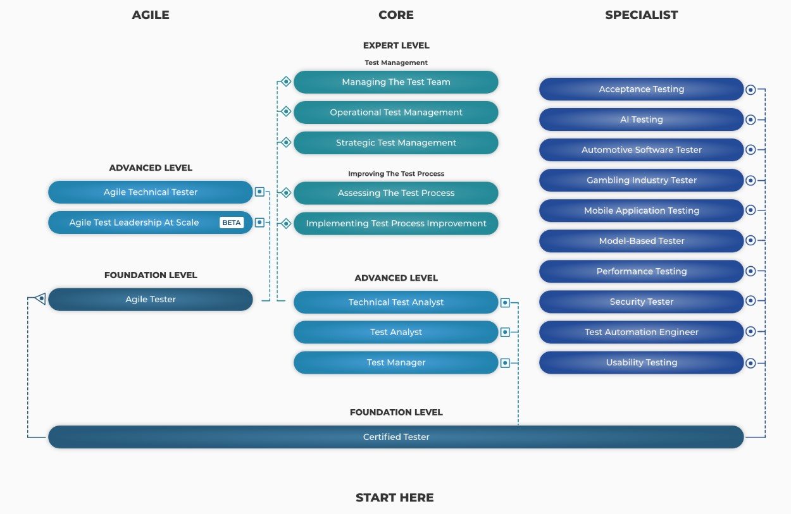

Тестування програмного забезпечення зараз користується великим попитом.
Для будь-якого ІТ-проєкту суттєве значення має наскільки кваліфіковано організована система тестування та забезпечення якості (Quality Assurance) на всіх етапах його життєвого циклу. Для QA фахівця наразі одним з найнадійніших способів підтвердити свої професійні якості спеціаліста є наявність міжнародного сертифікату, такого як, наприклад, ISTQB. У ції статі буде розглянуто, що ж таке ISTQB сертифікат, як підготуватися до здачі іспиту та які існують переваги для сертифікованого тестувальника.
ISTQB – це міжнародна некомерційна організація, заснована в 2002 році представниками 8 країн (Австрія, Данія, Фінляндія, Німеччина, Швейцарія, Швеція, Нідерланди та Великобританія), що займається питаннями розвитку галузі тестування ПЗ. Офіційно організація зареєстрована у Бельгії.
Організація ISTQB розробила власну програму тестування ISTQB® Certified Tester, яка дозволяє отримати міжнародний сертифікат з тестування.
Сертифікація ISTQB отримала визнання та є доступною у більш ніж 130 країнах світу. У кожній країні є свій представник (Member Board), який відповідає за акредитацію навчальних компаній та екзаменаційних центрів, якість сертифікаційних програм та підтримку іспитів на місцях. В Україні таким Member Board є Ukrainian Software Qualification Вoard (USQB).
Станом на грудень 2021 року, було проведено 1,1 мільйон іспитів ISTQB® і видано понад 806 000 сертифікатів.
ISTQB пропонує три рівні сертифікації (Foundation, Advanced, Expert) та три напрямки для кожного з рівнів (Agile, Core, Specialist).
-
Базовий рівень (Foundation — CTFL)
- напрямок Сore – це база для будь-якого сертифікату більш високого рівня;
- напрямок Agile.
-
Високий рівень (Advanced — CTAL)
- напрямок Сore (тест-менеджер, тест-аналітик та технічний тест-аналітик);
- напрямок Agile.
-
Експертний рівень (Expert — CTEL)
- напрямок Сore (передбачає сертифікацію за двома напрямками: тест-менеджмент та покращення процесу тестування).
Окремо виділяється напрямок Specialist. Він передбачає вузькоспеціалізовану сертифікацію (usability, security, mobile applications, acceptance, performance тестування та інші).
Що потрібно знати, щоб підготуватися до складання іспиту базового рівня?
Матеріал необхідний для засвоєння поділений на 6 основних розділів (детальніше тут):
- Основи тестування
- Тестування протягом життєвого циклу розробки програмного забезпечення.
- Статичне тестування.
- Техніки тестування.
- Тест-менеджмент.
- Інструменти для підтримки тестування.
Сертифікаційна програма базується на Syllabus та Glossary (їх можна знайти тут для кожного окремого рівня), тому при підготовці до іспиту краще всього спиратися на них.
Іспит, в залежності від рівня, містить 40-65 питань та триває 60-180 хвилин. Для людей, які не є носіями мови передбачено продовження часу для складання іспиту на 25%. Прохідний бал становить 65% від загальної кількості набраних балів.
Іспит складається з питань з декількома варіантами відповідей. Складання іспиту можливе у двох форматах: електронному та друкованому.
З усіма деталями складання екзамену в Україні можна ознайомитися у розділі FAQ офіційного представництва в Україні USQB.
Які існують шляхи підготовки?
Звичайно, можна підготуватися самостійно, за наявності необхідної кількості часу та наполегливості.
Насамперед, з прикладами питань можна ознайомитися на самому сайті ISTQB або знайти пробні варіанти екзаменаційний питань в інтернеті, наприклад, за такими запитами: «ISTQB Sample Question», «Foundation Level PRACTICE EXAM».
Крім того, існує безліч тренувальних сайтів та додатків, а також спеціальна література, яка націлена саме на складання іспиту. Деякі з корисних джерел та книг будуть наведені нижче.
-
Література:
- Software Testing: An ISTQB-ISEB Foundation Guide by Peter Morgan, Angelina Samaroo and Brian Hambling;
- Foundations of Software Testing: ISTQB Certification by Rex Black, Dorothy Graham, Erik Van Veenendaal;
- STQB Foundation Exam Preparation Guide by Rex Black.
- Сайти з онлайн-тестами:
-
Мобільні додатки:
- Learn ISTQB – містить глосарій з вбудованим пошуком, велику кількість теоретичної інформації, що базується на Syllabus, а також надає пояснення правильних відповідей в іспиті;
- ISTQB Training – включає в себе зразки тестів, глосарій та корисні посилання;
- Test Mentor for ISTQB – надає можливість проходити пробні тести, тести за розділами та на різних режимах складності, наявний глосарій та розділ з корисними посиланнями.
Інший спосіб якісної підготовки до іспиту, який допоможе заощадити час – це авторизовані тренінги та тренери у сертифікованому тренінговому центрі ISTQB. Підготовчі курси в акредитованих тренінгових центрах відповідають міжнародним стандартам, їх матеріали проходять ретельну перевірку в Ukrainian Software Quality Board. Отримати статус Accredited Training Provider доволі складно, адже навчальний центр має відповідати численним вимогам. Головним недоліком таких тренінгів є те, що вони не безкоштовні.
В Україні акредитацію для підготовки до іспиту та спеціальні програми мають деякі тренінгові центри.
Багато фахівців в області QA задають питання, а чи потрібна взагалі сертифікація тестувальників.
Головна ціль сертифікації – це підтвердження того, що знання відповідають певному рівню на момент проходження сертифікації.
Які ще переваги має отримання сертифікату ISTQB?
- Конкурентоспроможність при працевлаштуванні. Для деяких замовників, особливо з іноземних компаній, наявність сертифікату є не тільки бажаною, а й необхідною умовою для співпраці.
- Визнання сертифікації на міжнародному рівні. Це означає що сертифікат буде мати силу для будь-якої компанії та у будь-якій країні.
- Просування кар’єрними сходами та збільшення зарплати. Коли знання спеціаліста підтверджені сертифікатом міжнародного рівня, то керівництво має більше довіри до такого співробітника. Йому можуть надати можливість працювати над більш складними проєктами, які добре оплачуються.
- Систематизація знань. Під час підготовки до іспиту є можливість ідеально систематизувати свої знання, виявити слабкі місця та заповнити їх. При підготовці до іспиту на експертний рівень більше половини завдань мають практичний характер. Робота над теорією та практикою допомагає поглибити професійні навички та навчитися чогось нового.
- Розвиток додаткових навичок. Отримати сертифікати можна лише послідовно: з базового рівня до експертного. І на кожному етапі підготовка до іспиту вимагатиме нових знань, зусиль та практичних навичок. Це може стати додатковими стимулами розвитку у своїй сфері.